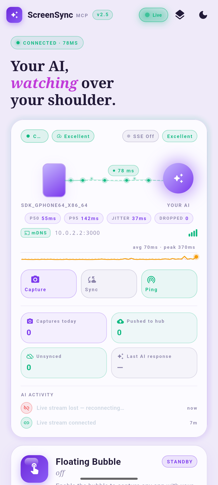
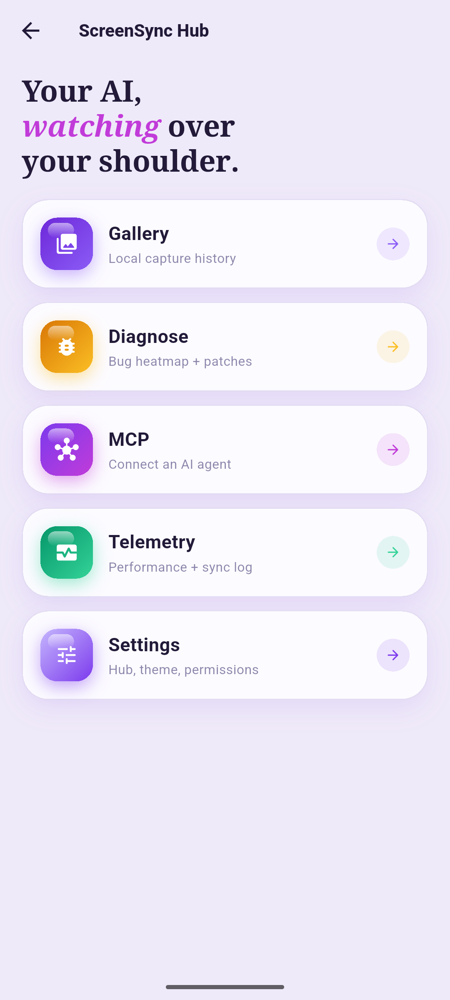
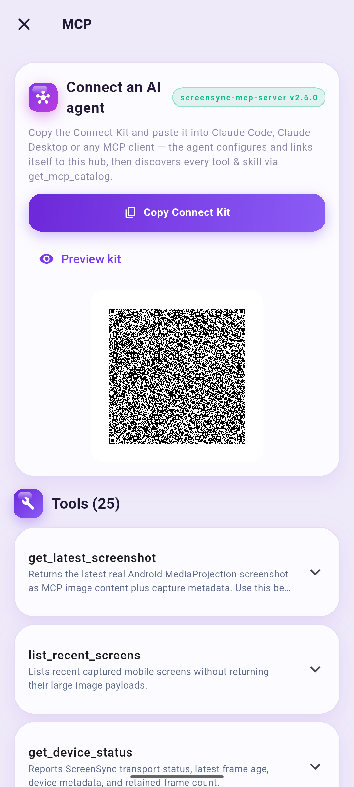
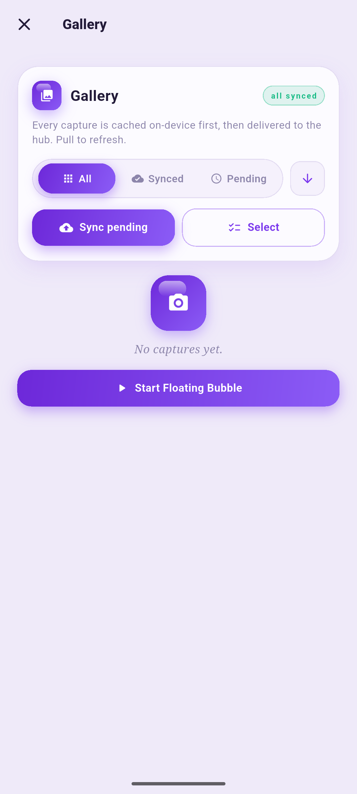
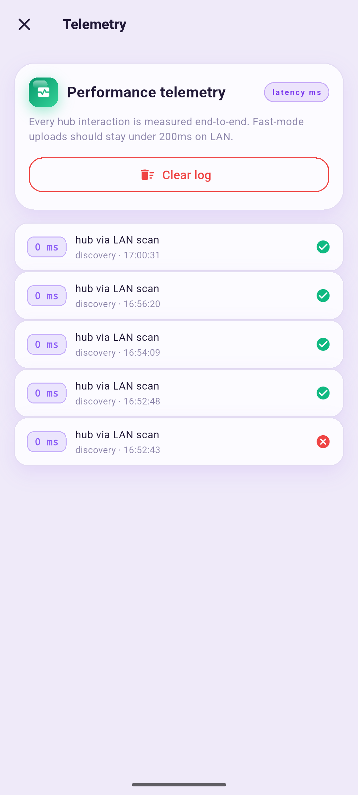
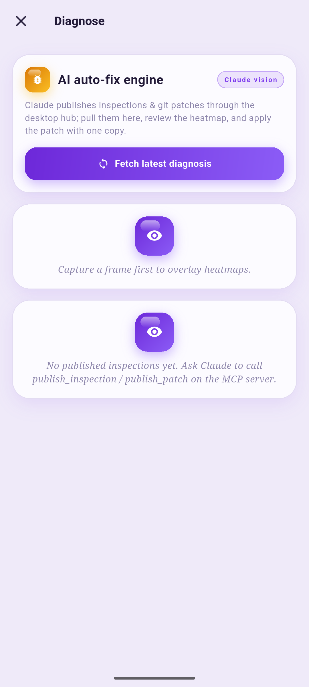
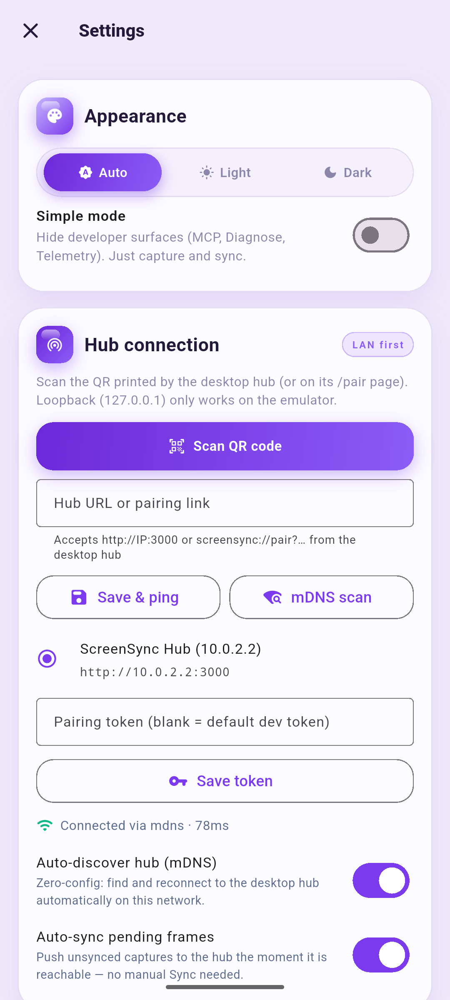

Your AI, watching over your shoulder.
The Android MCP server that lets AI agents see and control your phone
ScreenSync MCP is a free, local-first Android screen MCP server. Claude or any MCP agent sees your phone live, then taps, swipes and types, and the same hub drives your Chrome or Edge tab too. No root, no per-command quota, and frames stay on your own network.
226
MCP tools
~94 ms
Median latency (LAN)
0
EpsolDev servers holding your data
226 MCP tools: 29 for your phone and desktop, 197 for your browser. Latency is about 94 ms median on our LAN tests.

THIS PHONE ⟷ YOUR AI
Three pieces. One live loop. Your phone streams frames to a tiny hub on your computer, and your AI agent sees, and acts, through MCP.
Your Phone
The Flutter app captures the screen with MediaProjection: floating bubble, shake-to-capture, or on demand.
MCP Hub
A small Node.js hub on Windows, macOS or Linux (port 3000). Found automatically via mDNS, secured by a bearer token.
Your AI Agent
Claude, or any MCP client that runs local stdio servers, sees frames, reads the UI hierarchy, taps, swipes and types.
Install & Pair
Get the app from Google Play, install the ScreenSync hub on your computer, and pair with the Connect-Kit QR code. mDNS finds the hub on your LAN, so there is nothing to type.
Go Live
Allow screen capture for the session. The app streams frames over Server-Sent Events with live latency stats (P50/P95, jitter, drops) on the Connection Hero.
Let AI Work
Your agent calls MCP tools: grab the latest screenshot, inspect the UI tree, tap buttons, run autonomous UI tests, reproduce bugs, audit accessibility.
Requirements
- Screen capture
- Android 7.0 or later. No root and no ADB: the app uses MediaProjection after your consent each session.
- Device control
- Tap, swipe, type and launch app run through ADB from the hub, over USB or wireless debugging.
- Hub
- Node.js 18 or later on Windows, macOS or Linux (start-hub.bat or start-hub.sh).
- Network
- Phone and computer on the same network, or the optional Google Drive fallback.
Everything your agent needs.
Nothing it doesn't.
Built feature by feature from real workflows: mobile debugging, UI testing, live inspection.
Floating Bubble Capture
A draggable overlay bubble captures any app on your phone with one tap, with no switching back and forth.
Live SSE Stream
Frames and events stream in real time over Server-Sent Events. Watch the AI activity timeline as tool calls happen.
mDNS Auto-Discovery
The app finds your hub on the LAN automatically via Bonjour/mDNS. Wireless debugging friendly: no cables, no IP typing.
Connect-Kit QR Pairing
Scan a QR code to pair phone and hub instantly: token, host and port exchanged in one secure step.
Health HUD & Telemetry
Latency sparkline, P50/P95, jitter, dropped-frame counter and sync log: full visibility into the pipeline.
Shake-to-Capture
Shake your phone to snap a frame hands-free, with an adjustable sensitivity threshold in Settings.
Quality Presets
Stream, Fast and Inspect presets balance latency against fidelity, with a low-latency JPEG mode included.
Optional Google Drive Fallback
Off the LAN? If you turn it on, frames sync through your own Google Drive (bring your own storage) and hybrid mode switches automatically.
Local Capture History
Every capture is cached in a local SQLite gallery with sync state: browse, re-push or clear it anytime.
Browser Extension
Your agent can see, read, click, type and navigate in your real Chrome or Edge tab, with an approval gate for risky actions. Get the extension.
226 MCP tools. Phone, desktop and browser.
226 MCP tools: 29 for your phone and desktop, 197 for your browser. The 29 are 12 control tools such as control_tap, 3 os_* desktop tools and 14 capture and hub tools, plus 17 prompts and 3 resources, all over standard MCP stdio.
inspect_latest_mobile_screen
Built-in prompt: the agent grabs and deeply analyzes the current phone screen.
autonomous_ui_test
The agent walks your app's UI by itself: tapping, asserting and reporting.
reproduce_bug
Describe a bug in plain language and the agent reproduces it on-device with logs.
accessibility_audit
Automated a11y sweep of the live UI hierarchy: labels, contrast, touch targets.
Choosing a tool? Compare Android MCP servers side by side, or read how a screen MCP gives agents eyes and hands.
See it in action
A recorded session of an agent driving the app over MCP, then real screenshots: dashboard, hub, gallery, MCP catalog, telemetry and more.






…and more inside
Onboarding, QR pairing, region crop, annotate & diff tools.
Engineered for trust & speed
LAN-first, token-secured
Frames travel over your own network with bearer-token auth and never reach EpsolDev servers. The optional Drive fallback uses your Drive, and screenshots your agent requests go to its model provider.
About 94 ms median latency
About 94 ms median (P50) on our LAN tests with the Stream preset. Health pings every 20 seconds keep the link honest.
Standard MCP, any stdio client
Flutter (BLoC) app · Node.js/TypeScript hub · standard MCP stdio + HTTP/SSE. Works with any MCP client that runs local stdio servers.
Responsive by contract
Every app screen is tested at ≤360dp. The adaptive shell scales from small phones to tablets, in light & dark themes.
╭──────────────╮ mDNS + token ╭──────────────╮
│ 📱 PHONE │ ────────────────▶ │ 🖥 MCP HUB │
│ Flutter app │ HTTP :3000 │ Node.js/TS │
│ MediaProj. │ ◀──────────────── │ SSE events │
╰──────────────╯ live frames ╰──────┬───────╯
│ MCP stdio
▼
╭──────────────╮
│ 🤖 AI AGENT │
│ 29 phone/OS │
│ 197 browser │
│ 17 prompts │
│ 3 resources │
╰──────────────╯
Questions, answered
Your phone and browser,
one local hub.
Free, local-first and with no per-command quota. Install the app, start the hub, scan the QR, and your agent is watching in minutes.
Every release is written down — read the changelog for what changed in the Android app and the browser extension, build by build.